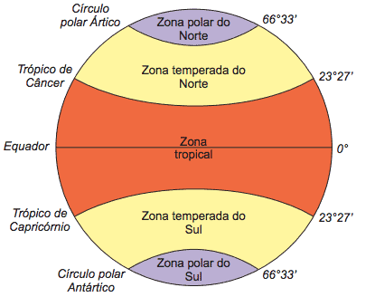
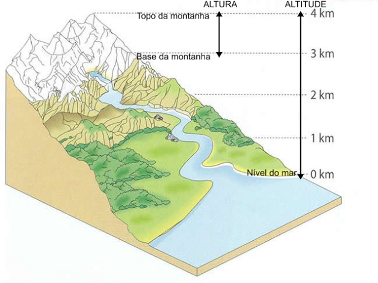
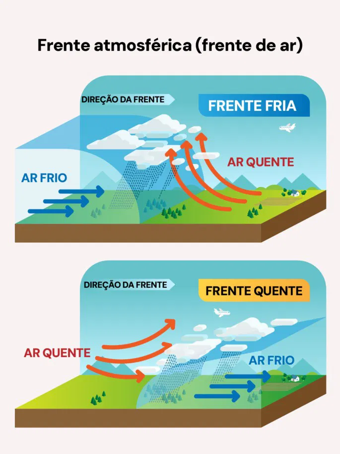
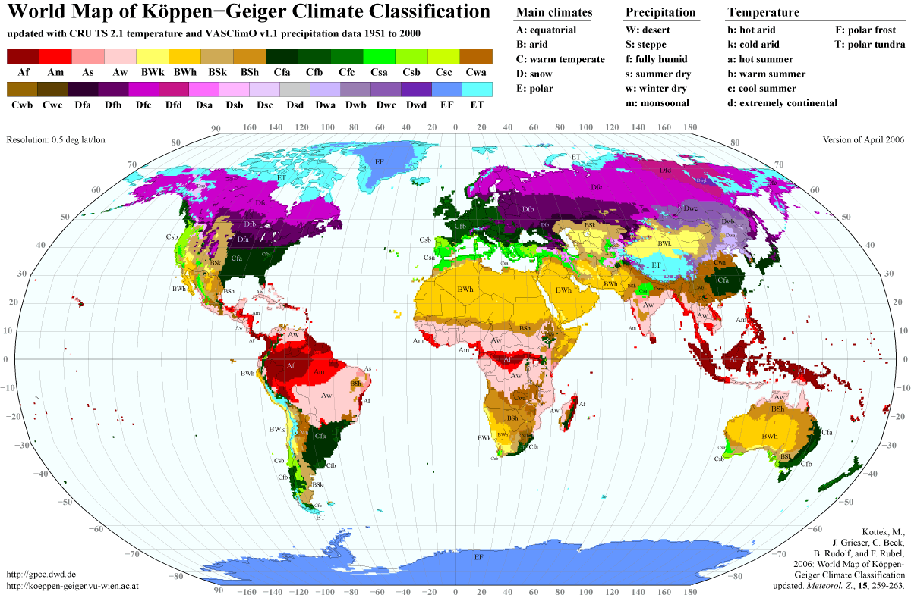
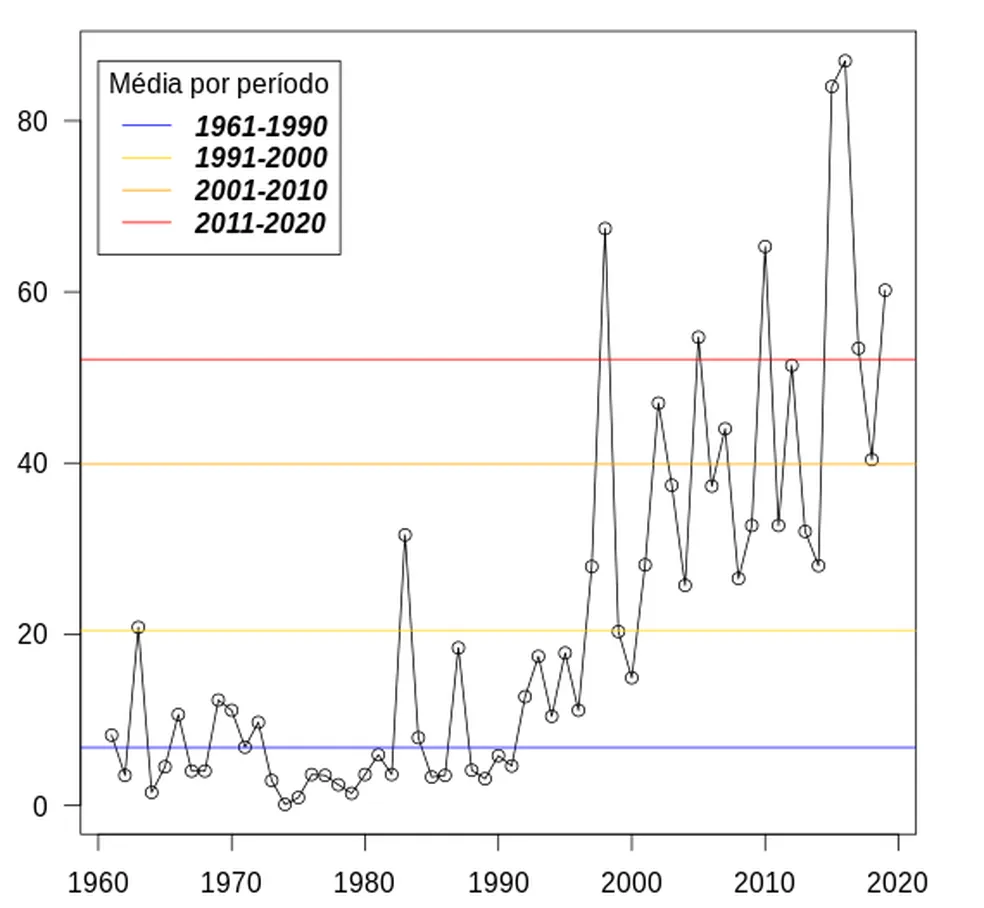

Ciência que estuda os fenômenos físicos e dinâmicos da atmosfera.
Ele é constante, é o estado físico das condições atmosféricas em dado momento e local.
É mutante, é o estudo médio do tempo para dado período em certo local.
Estuda os fenômenos atmosféricos com base em estatísticas, localidade, estação do ano, etc.
A Climatologia é dividida em pura e aplicada, a primeira foca apenas nos fenômenos em si. A segunda é quando é aplicada em outras áreas, como agricultura ou aviação.
Distância entre qualquer ponto e a linha do equador, podendo variar de 0° a 90° para norte(N) ou sul(S).

Distância, a partir do nível do mar, para qualquer ponto na superfície terrestre. Em média, a cada 1km, a temperatura cai em 6,5°C.

Grandes volumes de ar com características "homogêneas", em relação a temperatura e vapor d'água.

São as características dadas pelo continente ou oceano.
Como água é reguladores térmicos, em lugares com pouca água temos muita amplitude térmica, e o contrário também é verdade. (Amplitude térmica é a oscilação de temperatura entre o dia e noite.)
Variações de temperatura, pressão e velocidade formam correntes nos oceanos, que se movimentam separadamente do resto do oceano, ajuda o ecosistema local e a troca de temperatura. Existem as correntes frias e quentes, que esfriam ou esquentam a região.
Quantidade de energia absorvida pela atmosfera após a propagação do calor
calor absorvido pelo planeta nas porções sólidas e líquidas.
A atmosfera é aquecida por condução e convexão, não por irradiação.
Quantidade de vapor d'água no ar.
Massa de ar acelerada pela gravidade que faz pressão acima de tudo na superfície terrestre.
Massas de ar em movimento, diferença de densidade, temperatura e a rotação da Terra causam as correntes de convexão.

A temperatura da terra varia ao longo do tempo.
Causas internas (Natural).
Causas externas (Humanos).
Estudo do clima antes dos estudos modernos (100 anos atrás).
A paleoclimatologia estuda o gelo, cada camada é uma década mais velha que a outra.
Documentário que trata sobre esse assunto e como o mundo está colapsando: A planet on the brink.Nos últimos 5 anos aumentou 1,5°C em relação à antes das indústrias.

Causam secas severas, florestas queimadas, desertificação, tempestades tropicais
e ciclones mais intensos, enchentes.
Enchente = auge da água no rio;
Inundação = água vazou do rio;
Alagamento = água acumulou.